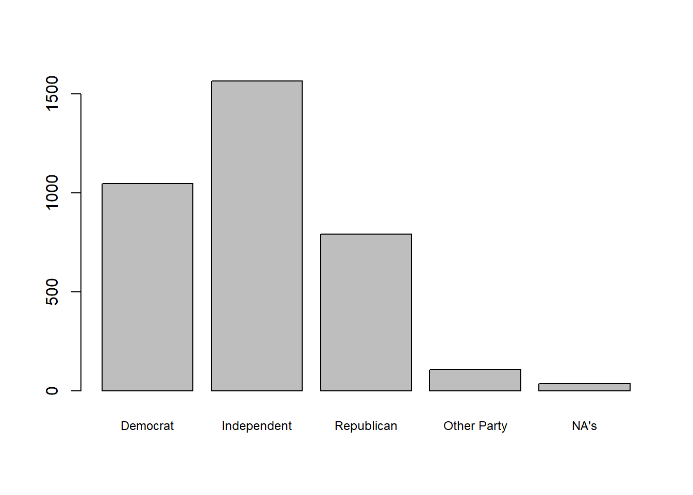
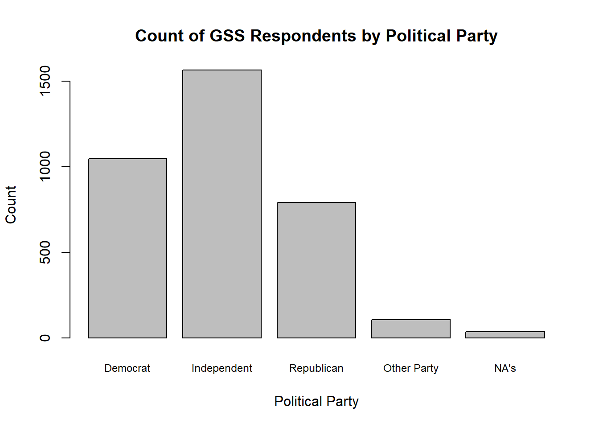
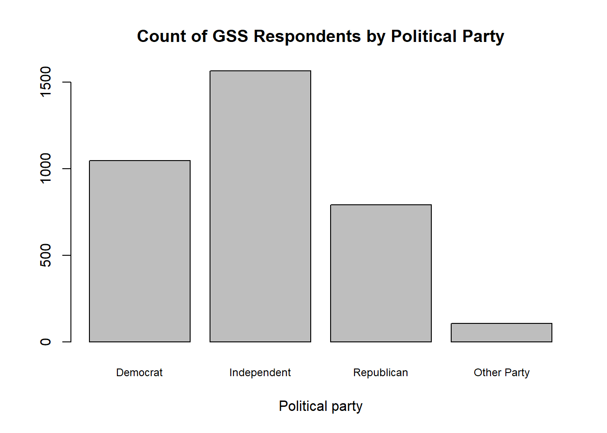
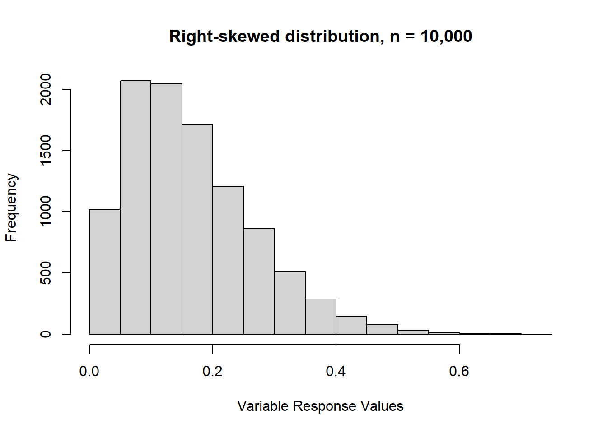
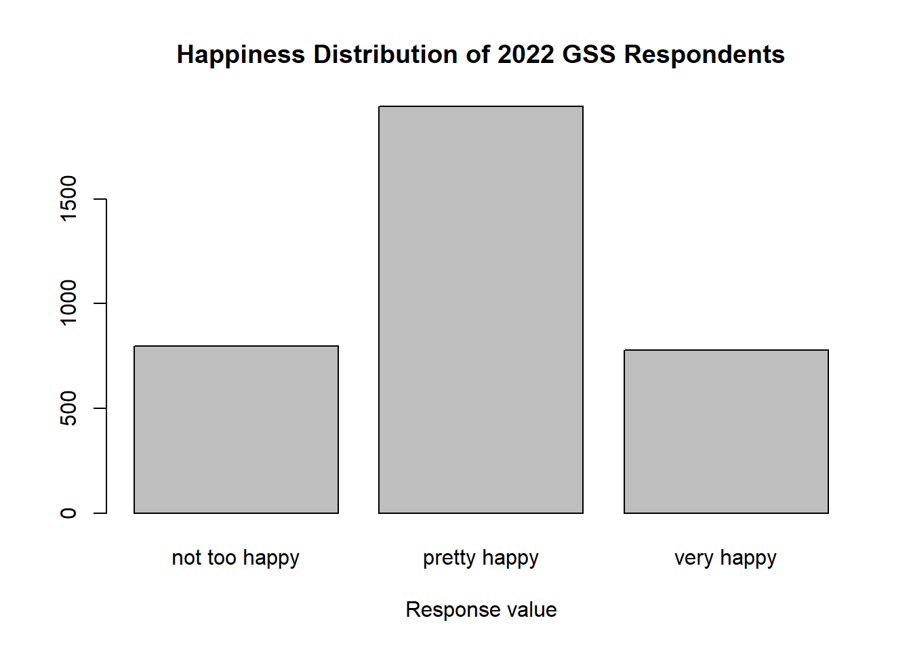

library(janitor)
library(tidyverse)
load("our_gss.rda")4 Univariate: Categorical
Before we start examining the relationships between multiple variables, we have to look under the hood of our variables individually and make sure we have a good sense of what they are like.
We want to know the frequency distribution of the response values, the measures of central tendency, and the dispersion. In other words, we want to see how many respondents chose each response value, which response values are most typical for each variable, and the extent to which the response values vary.
Luckily for us, R has plenty of tools for generating these quantitative summaries, as well as visualizing them in the form of barplots, histograms, and other common styles for displaying data.
This tutorial will cover each of these elements, and I will highlight any differences specific to certain levels of measurement along the way.
4.1 Frequency Distributions
Let’s start with categorical variables. We will start with frequency distributions by way of frequency tables and bar plots. Then, we will talk about measures of tendency and observe when they are appropriate for categorical data.
4.1.1 Frequency tables
Frequency tables are the most effective way to report the frequency distributions for categorical variables. There are actually a ton of different ways to produce this kind of table in R, but we are going to use some convenient functions from the janitor package, so let’s go ahead and load that in.
If you are on a lab computer, try to load it with library() first. If you get an error, go ahead and install it with install.packages() and then load it in.
While we’re at it, we’ll also bring in tidyverse and load in our GSS subset.
Let’s go ahead and work with one of our partyid recodes from last time. We’ll use partyid_recoded, where we retained all the party choices but collapsed the categories of degree (e.g. strong democrat + not very strong democrat = Democrat).
We can use a simple command with tabyl() from the janitor package to produce our frequency tables. Let’s take a look at some output, and I’ll go through a couple details and mention some further specifications we can make.
All we need to do is give our data frame as the first argument, and then our particular variable column as the second argument.
# Without pipe operator
tabyl(our_gss, partyid_recoded)# With pipe operator
our_gss |>
tabyl(partyid_recoded) partyid_recoded n percent valid_percent
Democrat 1046 0.295146727 0.29809062
Independent 1565 0.441591422 0.44599601
Republican 792 0.223476298 0.22570533
Other Party 106 0.029909707 0.03020804
<NA> 35 0.009875847 NANow, we have a frequency table for partyid_recoded!
Each row is a level of partyid_recoded. The n column refers to the sample size, so, for example, 1,565 respondents indicated that they were Independents.
We then have two different columns for percentages. The percent column is the proportion of all respondents that chose each response value—while including NA values. Often, we want to get a proportion for only the sample of those who actually answered the question. This is what the valid_percent column indicates and is what we are often looking for.
Let’s break it down a little for clarity.
The total number of respondents is the sum of the ‘n’ column.
1565 + 1046 + 792 + 106 + 35 = 3,544
Note that this is also the number of observations in our data frame
There are also 35 observations coded as NA, so the total number of valid respondents is 3,509.
Now, I’ll give the calculations for the Independent row.
# I'm going to define a few objects here for simplicity.
all_respondents <- 3544
all_minus_na <- (3544 - 35)
independents <- 1565# Percent column
independents / all_respondents[1] 0.4415914# Valid percent column
independents / all_minus_na[1] 0.445996In this case, there really aren’t that many NA values, so it does not change too much. In general, we will often discard NA categories in analyses we do for the course, but they give us important information about the survey and can be useful for some questions, so it’s important to keep track of them nonetheless.
Now, let’s clean a couple things up with the adorn_() functions.
Let’s add a row for totals, turn the proportions into percentages, and round the decimals. We can use the pipe operator to quickly leverage a few different adorn_() functions.
our_gss |>
tabyl(partyid_recoded) |>
adorn_totals(where = "row") |>
adorn_pct_formatting() |>
adorn_rounding(digits = 2) partyid_recoded n percent valid_percent
Democrat 1046 29.5% 29.8%
Independent 1565 44.2% 44.6%
Republican 792 22.3% 22.6%
Other Party 106 3.0% 3.0%
<NA> 35 1.0% -
Total 3544 100.0% 100.0%We don’t need to supply any input for adorn_pct_formatting()—which changes the proportions to percentages—but a couple of these functions do require inputs.
For adorn_totals(), we give “row” for the where input, which tells the function that we want the totals column to appear as a row.
For adorn_rounding(), we give an input for digits, which is the number of digits we want after the decimal point. We’ll keep 2 and thereby round to the hundredth.
Lastly, if we want, we can also make the column names a little nicer. It may not be obvious because we’ve just been displaying this table rather than storing it as an object, but it’s actually a data frame, so we can edit the column names directly.
Let’s save it as an object so that’s easier to see.
our_table <- our_gss |>
tabyl(partyid_recoded) |>
adorn_totals(where = "row", na.rm = TRUE) |>
adorn_pct_formatting() |>
adorn_rounding(digits = 2)We can then use the colnames() function. Let’s supply our table data frame as an input to get a feel for it.
colnames(our_table)[1] "partyid_recoded" "n" "percent" "valid_percent" It lists out the character vector of the 4 column names, and we can actually just write over them by supplying our desired column names as a character vector. If we assign that character vector to colnames(our_table), it will overwrite the column names. Make sure the labels are in the same order as they appear in the data frame.
colnames(our_table) <- c(
"Political Party",
"Frequency",
"Percent",
"Valid Percent"
)
our_table Political Party Frequency Percent Valid Percent
Democrat 1046 29.5% 29.8%
Independent 1565 44.2% 44.6%
Republican 792 22.3% 22.6%
Other Party 106 3.0% 3.0%
<NA> 35 1.0% -
Total 3544 100.0% 100.0%Excellent! We’ll learn how to make this even nicer a bit later in the semester, but this looks pretty good for now.
Let’s look at one last visualization technique for categorical variables.
4.1.2 Bar plots
For categorical data, bar plots are often the way to go. These typically have the response values on the x axis, and the count or percentage of each response value is tracked on the Y axis.
Much like with tables, we’ll learn some fancier ways to do this later in the semester. But, in the meanwhile, base R has some great plotting functions that can be used very easily without much specification. They’re not the prettiest out of the box, but they will do everything we need.
For barplot(), we just need the variable column that we are trying to plot. But, there’s one thing to remember when you are trying to get a barplot this way—you have to provide the result of summary(my_variable) rather than the variable column directly.
I’ll show you a couple ways to do that, which all do the exact same thing.
# No pipe operator; summary() nested inside barplot()
barplot(summary(our_gss$partyid_recoded))# With pipe operator
our_gss$partyid_recoded |>
summary() |>
barplot()# Make separate object for the summary() output
my_summary <- summary(our_gss$partyid_recoded)
barplot(my_summary)Now, as I mentioned, we won’t spend too much time adjusting these plots for now, but there are a couple things we can do to make this a little better to look at for now.
For one, our response labels (Democrat, Republican, Independent, etc) Actually look pretty good in the display here, but it’s not uncommon for these to get cut off if we have several response categories or the response names are especially long. So, I’ll show you how to reduce the font size as one potential fix for that.
We can add the cex.names argument to barplot(). This argument takes a number, and the number should reflect an intended ratio of the default font size for our value labels on the x-axis. So, for example, I would enter ‘2’ if I wanted the font to be twice as big. For our purposes, I want to reduce the font a bit, so we’ll enter ‘.75’ to reduce the font size by 1/4.
our_gss$partyid_recoded |>
summary() |>
barplot(cex.names = .75)
We can also add some simple descriptive information for the plot, such as a title and labels for the x and y axis. We can do so within barplot()
our_gss$partyid_recoded |>
summary() |>
barplot(
cex.names = .75,
main = "Count of GSS Respondents by Political Party",
xlab = "Political Party",
ylab = "Count"
)
As a final point, I’ll also note that you can pass partyid_recoded into the function na.omit() before summary() if you ever want to produce a barplot that excludes NA responses. na.omit() will remove any NA values from the vector we provide it.
our_gss$partyid_recoded |>
na.omit() |>
summary() |>
barplot(
cex.names = .75,
main = "Count of GSS Respondents by Political Party",
xlab = "Political party"
)
4.2 Measures of Central Tendency
Now, let’s talk about measures of central tendency. Because there is no mathematically meaningful relationship between the different levels of a categorical variable, our options for reporting measures of central tendency are a little more limited.
The classic central tendency measures are the mode, the median, and the mean. For categorical variables, it is not ever meaningful to take the mean. As we saw back on our first day with R, you will get a warning message if you try to run mean() on a character or factor variable.
Our options are limited to the mode or the median, depending on the distribution of responses.
4.2.1 Nominal variables
In the case nominal variables, there is no semblance of meaningful arrangement to the categories. In this case, we can only report the mode.
Often times, we can just glean this from the frequency tables, or even just the summary() output. Let’s stick with partyid_recoded as an example.
summary(our_gss$partyid_recoded) Democrat Independent Republican Other Party NA's
1046 1565 792 106 35 Remember that the mode is just the value with the most occurrences. So, the mode here is ‘Independent’.
This is likely sufficient for the variables we will work with, but you may also want a method that’s a little more exacting and does not depend on visually scanning for the mode.
R does not actually have a built-in mode() function like it does for mean() and median(). Well, it does have mode(), but it evaluates the ‘mode’ of the data, which, in this case, is actually the ‘storage mode’, or the data type. This is not particularly helpful for us, but we can use another convenient package called DescTools.
If you are on a lab computer, go ahead and try loading it with library() first. If it does not load, then install it with install.packages("DescTools") and then load it in.
library(DescTools)Then, we can just use the Mode() function within DescTools. Make sure you capitalize the ‘M’, as this is what distinguishes the DescTools function from the base R function.
Also, be sure to include na.rm = TRUE, as R will not know what to do with the NA values when calculating the mode, so we need to tell it to disregard them.
Mode(our_gss$partyid_recoded, na.rm = TRUE)[1] Independent
attr(,"freq")
[1] 1565
Levels: Democrat Independent Republican Other PartySo, this also gives us our mode, and is a bit more precise a way of doing so—especially when we have a bunch of possible response values.
Note that it also tells us how many responses were associated with that value (1565).
Now, let’s talk about ordinal variables, where we have another consideration.
4.2.2 Ordinal variables
While ordinal variables are still categorical and thus unamenable to mathematical analysis, they do have a meaningful order. This means that it’s possible for us to take the median value of an ordinal variable.
However, we can only do so when the variable is normally distributed. If there is significant skew in the distribution of responses, then we will need to report the mode for an ordinal variable.
Let’s refresh our memory on distributions before we take some central tendency measures of ordinal variables in the GSS.
4.2.2.0.1 Distribution assumptions
If the responses of an ordinal variable are normally distributed, we can take the median.
In the ideal form of the normal distribution, you have a mean of 0 and a standard deviation of 1, where roughly 68% of values are within 1 standard deviation in either direction of the mean, and roughly 95% of values are within 2 standard deviations in either direction.
However, in practice, our distributions are unlikely to reflect the ideal normal distribution. But, if they are roughly normal, we can work with that.
I’ll display a few distributions here as a reminder, starting with the classic normal distribution. If you produce a barplot and find the data looks generally like this—where the majority of variables are concentrated around the middle of the distribution—then you can report the median response rather than the mode.
Here’s the normal distribution
Here’s a left-skewed distribution. This is when there’s a prominent ‘tail’ on most of the left-hand side of the distribution. In other words, when most of the values are concentrated on the right-hand side of the distribution (the upper end), then we have a left-skew.

Lastly, here’s a right-skewed distribution. As you can probably guess from the description of a left-skewed distribution, a right-skew occurs when we have a long tail through most of the right-hand side of the distribution. In other words, most values are concentrated on the left-hand side.

So, if the distribution of your variable looks (mostly) like the normal distribution, go ahead and take the median of any ordinal variable.
Let’s go ahead and practice doing that with the age_ord variable we created last time.
In the case of age_ord, we’d actually want to take the mode, because it’s a bit left-skewed. We can see that when we make the barplot
our_gss$age_ord |>
summary() |>
barplot(
main = "Age Distribution of GSS Respondents",
xlab = "Age grouping"
)But wait, let’s try the happy variable. This is an ordinal variable in our subset that we haven’t used yet. We’ll see if its normally distributed.
our_gss$happy |>
summary() |>
barplot(
main = "Happiness Distribution of 2022 GSS Respondents",
xlab = "Response value"
)
Perfect. We can ignore the NAs for this, and, otherwise, the distribution is exactly what we want to see. Most of the variables are concentrated at the midpoint of the distribution, with tails on either side. So, happy will serve as a good example of a case where taking the median of an ordinal variable is appropriate.
While R has a built-in median() function, it actually only works with numeric data. Fear not, however, as we can also use the DescTools package for this.
In order to distinguish itself from the default median() function, the DescTools package uses a capitalized ‘M’. So, make sure you use Median() when you are working with an ordinal variable.
We also need to make sure that NAs are not included for the calculation. As we have seen a few times, R will not know what to do with these if we don’t tell it to exclude them.
Median(our_gss$happy, na.rm = TRUE)[1] pretty happy
Levels: not too happy < pretty happy < very happyPerfect! Looks like our median is ‘pretty happy.’
Now, let’s talk about presenting a univariate analysis of numeric data.